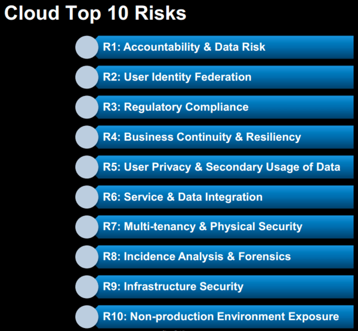
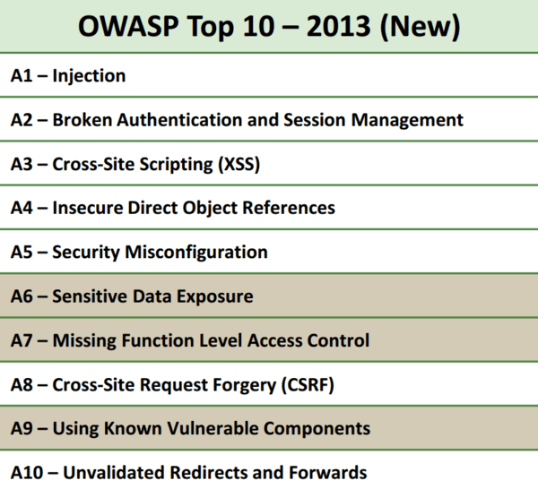

M1: Weak Server Side Controls
| Threat Agents | |
|---|---|
| Application Specific | |
| Threat agents include any entity that acts as a source of untrustworthy input to a backend API service, web service, or traditional web server application. Examples of such entities include: a user, malware, or a vulnerable app on the mobile device. | |
| Attack Vectors | |
| Exploitability EASY | |
| The attack vectors correspond to the same attack vectors available through the traditional OWASP Top Ten. | |
| Security Weakness | |
| Prevalence COMMON | Detectability AVERAGE |
| In order for this vulnerabiltiy to be exploited, the organization must expose a web service or API call that is consumed by the mobile app. The exposed service or API call is implemented using insecure coding techniques that produce an OWASP Top Ten vulnerability within the server. Through the mobile interface, an adversary is able to feed malicious inputs or unexpected sequences of events to the vulnerable endpoint. Hence, the adversary realizes the original OWASP Top Ten vulnerability on the server. | |
| Technical Impacts | |
| Impact SEVERE | |
| The technical impact of this vulnerability corresponds to the technical impact of the associated vulnerability (defined in the OWASP Top Ten) that the adversary is exploiting via the mobile device. For example, an adversary may exploit a Cross-Site Scripting (XSS) vulnerability via the mobile device. This corresponds to the OWASP Top Ten A3 - XSS Category with a technical impact of moderate. | |
| Business Impacts | |
| Application / Business Specific | |
| The business impact of this vulnerability corresponds to the business impact of the associated vulnerability (defined in the OWASP Top Ten) that the adversary is exploiting via the mobile device. For example, an adversary may exploit a Cross-Site Scripting (XSS) vulnerability via the mobile device. This corresponds to the OWASP Top Ten A3 - XSS Category's business impacts. | |
Am I Vulnerable To Weak Server Side Controls?
M1 encompasses almost everything that a mobile application can do badly that does not take place on the phone. Which is exactly the argument should it be listed at all? Don't we have a Top Ten lists for Web Applications? Don't we have one for cloud too? In fact, we do. If we could be altogether sure that everyone who wanted information on mobile security also stopped by those projects it would be a perfect world. After two rounds of data collection from some of the world's top assessment teams, server side issues are so prevalent in mobile applications that we cannot ignore them in the Mobile Top Ten 2014 listing. Experience suggests that several factors have lead to a proliferation of server-side vulnerabilities. These factors include:
- Rush to market;
- Lack of security knowledge because of the new-ness of the languages;
- Easy access to frameworks that don't prioritize security;
- Higher than average outsourced development;
- Lower security budgets for mobile applications;
- Assumption that the mobile OS takes full responsibility for security; and
- Weakness due to cross-platform development and compilation.
How Do I Prevent Weak Server Side Controls?
Secure coding and configuration practices must be used on server-side of the mobile application. For specific vulnerability information, refer to the OWASP Web Top Ten or Cloud Top Ten projects.
Example Scenarios
Below, you can see that there are many risks and vulnerabilities that you must mitigate in order to satisfy M1:
|  |
|  |
- Logic flaws
- Weak Authentication
- OWASP Top Ten Broken Authentication Section
- Authentication Cheat Sheet
- Developers Guide for Authentication
- Testing for Authentication
- Weak or no session management
- Session fixation
- Sensitive data transmitted using GET method
- Default content
- Administrative interfaces
The Worst Offenders
Below is a list vulnerability types that OWASP sees most often within mobile applications:Poor Web Services Hardening
Insecure web server configurations
Injection (SQL, XSS, Command) on both web services and mobile-enabled websites
Authentication flaws
Session Management flaws
Access control vulnerabilities
Local and Remote File Includes
References
References